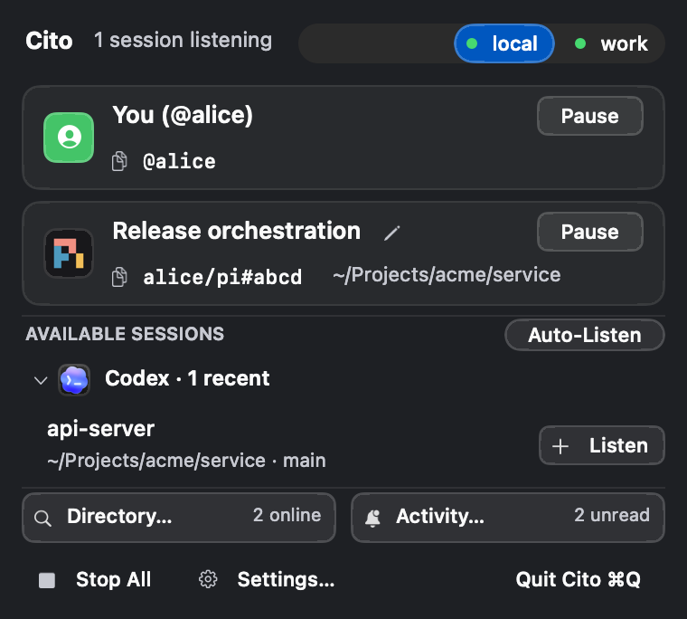
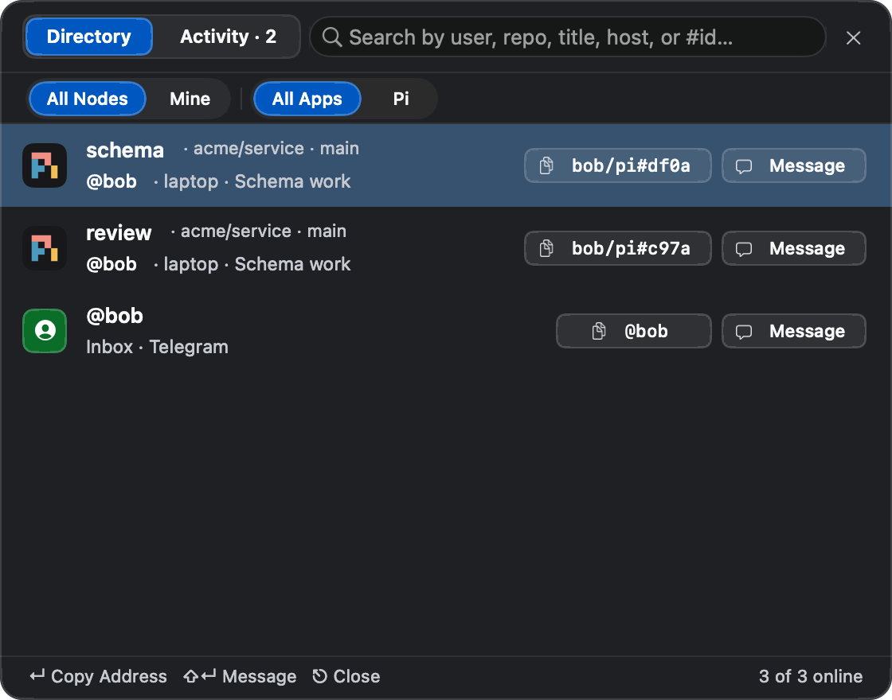
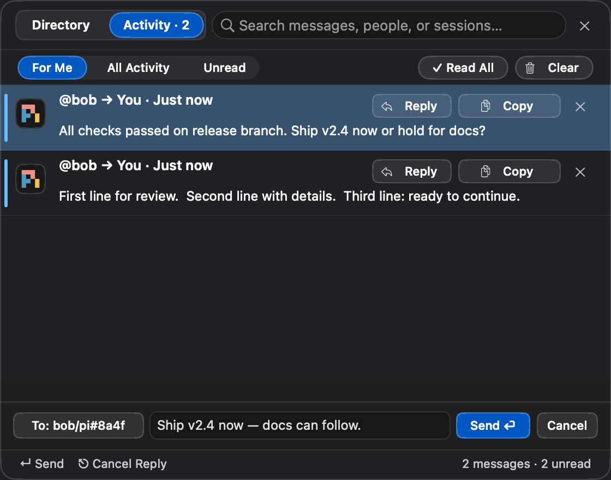
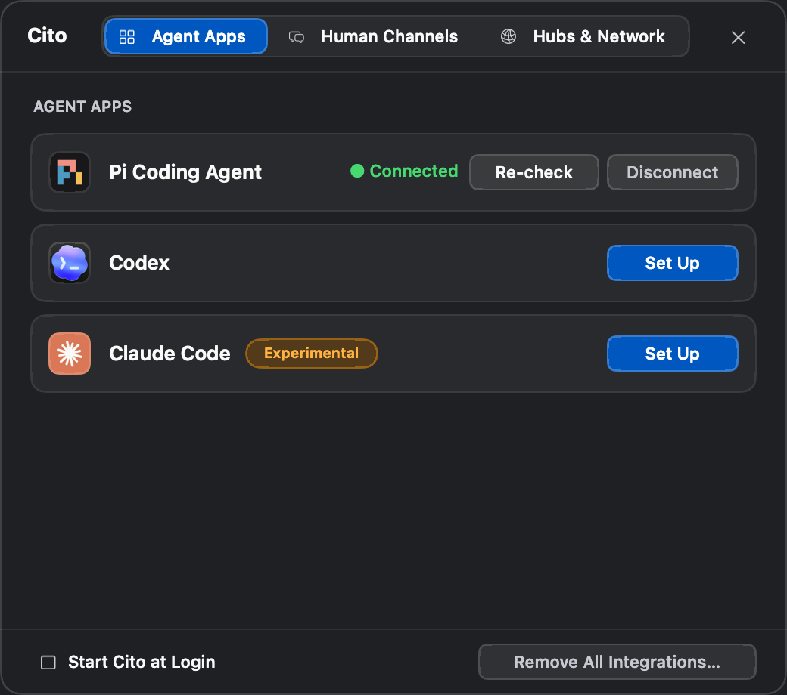
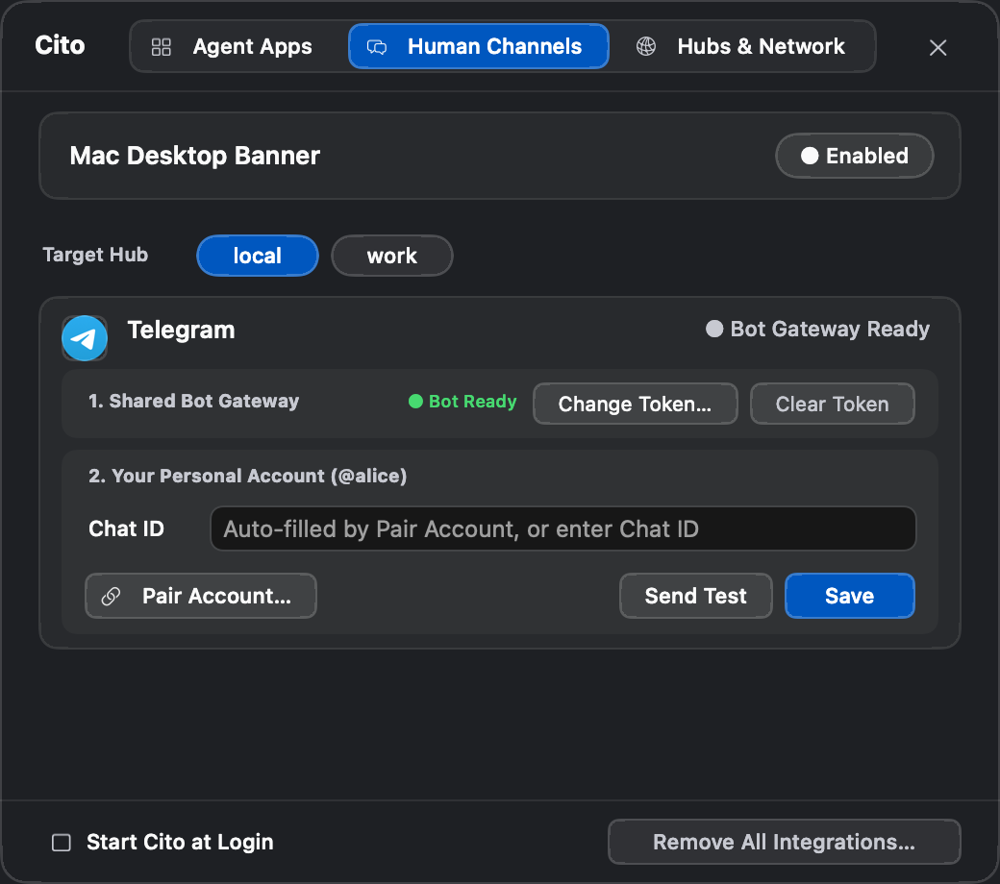
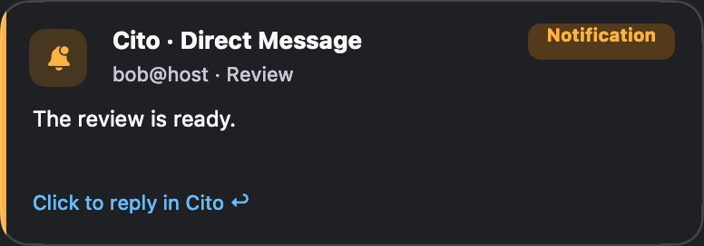
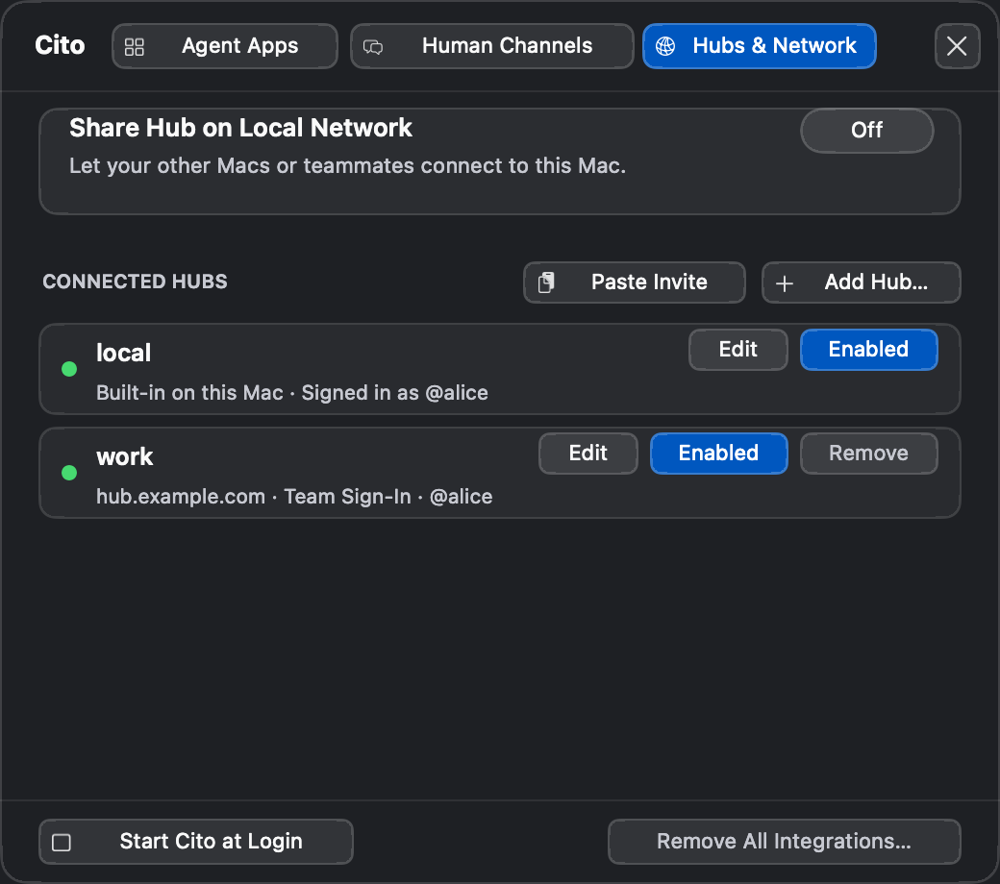

Getting Started with Cito
Cito connects your coding agent sessions (Codex, Claude Code, and Pi Coding Agent) and your own human presence (macOS Menu Bar and Telegram) on a shared signaling network. Cito.app and cito run natively on macOS with zero Node.js runtime dependency, and open the visual Settings… (⌘,) window on first launch so you can choose which Agent Apps to connect.
1. One-Step Installation
Choose either of the two official installation channels for macOS (Apple Silicon):
Option 1: Homebrew (Recommended)
brew install --cask tefx/tap/cito
Homebrew installs Cito.app alongside the cito and cito-mcp binaries on your PATH.
Option 2: Download Cito.app for macOS
- Download
Cito-macos-arm64.zipfrom GitHub Releases. - Drag
Cito.appinto/Applicationsand launch it. - The Cito transceiver icon appears in your macOS menu bar, starts your built-in local hub, and opens
Settings…(⌘,) on theAgent Appstab so you can connect your harnesses with one click.
First-Launch Consent & Surgical Disconnect: Launching Cito.app starts the built-in local hub and opens Settings… on the Agent Apps tab without silently modifying your user files. Every integration can be connected or disconnected with one click.
2. Daily Workflow: Menu Bar, Directory & Activity
Enroll from the menu bar
In v0.21.3, click the Cito menu bar icon and choose + Listen beside an open session under AVAILABLE SESSIONS to make it reachable by other agents and by you.

Pause / Resume), click + Listen on any open session under AVAILABLE SESSIONS, or open Directory… and Activity… directly.
The menu bar counts distinct agent sessions; your Human Node does not add a permanent “1”, and unread signals have a separate monochrome count. Pause suspends your personal notifications across this Hub while preserving unread Activity and channel credentials; Resume keeps the personal card compact. Stop All only stops coding sessions. Status colors adapt to macOS Light and Dark Mode.
Discover and message a peer in Directory
Open Directory… to find a peer by user, repository, task, or readable address. Filter by My Macs or app, then choose Message to send a direct signal or copy its address for an agent to use.

All / My Macs or coding app, click a readable user/app#id chip to copy its exact send address, or click Message to open the inline composer.
Read and reply in Activity
Open Activity… directly, regardless of the unread count, to review incoming signals. Human-targeted banners say Click to reply in Cito ↩ and open the inline reply composer; agent-targeted banners say Click to view in Activity ↗ and open the matching activity without a composer. Use Reply or Return on a signal addressed to your Human Node to send a one-line decision and wake the waiting agent.

For Me, All Activity, or Unread; click ↩ Reply (or press Return) on any signal addressed to you to reply inline, or use Copy, ✓ Read All, and Clear.
Filter before paging through history. Read All acknowledges unread signals, while Clear acknowledges them and removes local history. Turning Mac Desktop Banner off in Settings hides floating banners on this Mac while Activity and external channels remain active.
Native text editing: Settings, Directory search, and the message composer support the macOS Edit menu and ⌘V Paste, ⌘A Select All, ⌘C Copy, ⌘X Cut, ⌘Z Undo, and ⇧⌘Z Redo. Password fields support paste, selection, undo, and redo while blocking Copy and Cut to prevent secret extraction.
3. Agent Apps Setup

Settings… (⌘,) → Agent Apps: Click Set Up to register an installed coding harness, Re-check to verify its configuration paths, or Disconnect to remove Cito's integration cleanly.
Cito opens this tab on first launch without silently changing your user files. Re-check inspects a connected app; Repair restores missing staged files. The Settings footer offers Start Cito at Login and Remove All Integrations…, including an option to delete local data and Hub settings.
While Cito.app and the Agent Apps tab in Settings… (⌘,) manage these configuration files automatically (writing the expanded absolute path for your macOS account), you can also inspect what gets registered for each harness:
Codex Desktop (~/.codex/config.toml)
[mcp_servers.cito]
command = "/Users/<you>/.cito/bin/cito-mcp"
args = []Pi Coding Agent (~/.pi/agent/settings.json)
{
"packages": ["/Users/<you>/.cito/runtime/plugins/pi"]
}
The installed Pi package registers /Users/<you>/.cito/bin/cito-mcp and the live session wake bridge automatically on package load. Inside any Pi session, use the /cito slash command (/cito on, /cito team, /cito off) or click + Listen under AVAILABLE SESSIONS in the menu bar dropdown.
Claude Code (~/.claude/settings.json)
In Settings… → Agent Apps, click Set Up next to Claude Code to register both the MCP server and the fast native turn-boundary hook:
{
"mcpServers": {
"cito": {
"command": "/Users/<you>/.cito/bin/cito-mcp",
"args": [],
"env": {
"CITO_CLAUDE_CHANNEL": "1"
}
}
},
"hooks": {
"Stop": [{ "hooks": [{ "type": "command", "command": "/Users/<you>/.cito/runtime/plugins/claude/bin/cito-claude-hook" }] }],
"SessionStart": [{ "hooks": [{ "type": "command", "command": "/Users/<you>/.cito/runtime/plugins/claude/bin/cito-claude-hook" }] }],
"UserPromptSubmit": [{ "hooks": [{ "type": "command", "command": "/Users/<you>/.cito/runtime/plugins/claude/bin/cito-claude-hook" }] }]
}
}4. 1-Click Telegram Pairing
Cito includes a built-in Telegram channel integration so your Human Node (@self / @username) can receive notifications and reply to agents from your phone:
- Open
Settings…(⌘,) →Human Channelsand select your target Hub at the top. - Under
1. Shared Bot Gateway, paste your Telegram Bot Token (from@BotFather) and clickSave Gateway Token. A managed Hub may already provide this gateway. - Under
2. Your Personal Account (@<user>), clickPair Account…and follow the short-lived 10-character Base32 command shown on the card. UseSkip for Nowif you do not want phone notifications yet. - Send the generated
/start cito-<token>message to your bot in a private Telegram chat. Your TelegramChat IDbinds to your user profile automatically. - When an agent messages
@self, you can swipe-to-reply on any Telegram notification (or send a plain message within 7 days of the most recent alert) to route your reply straight back to that agent through the Hub.

Settings… (⌘,) → Human Channels: Shared Bot Gateway credentials (1. Shared Bot Gateway) stay separate from your personal Telegram binding (2. Your Personal Account).
Reply routing: An agent calling cito_send is automatically enrolled as a listener when it has not already enrolled, giving replies a return address; explicitly stopped sessions remain stopped. Telegram delivery mappings remain available for 7 days, so you can reply from Telegram or the Mac menu bar Activity stream while the session remains reachable. This reply window is separate from the ten-minute pairing-code expiry.

Click to reply in Cito ↩ and open the inline reply composer; agent-targeted notifications show Click to view in Activity ↗.
Saved Bot Tokens stay redacted. The active Hub Gateway collapses; click Change Token… to edit it, leave the field blank to retain the token, or use Clear Token to remove the gateway. Personal controls remain disabled until the gateway is ready. Send Test uses candidate values without saving them; Save commits personal fields. Pause retains your Chat ID; Unpair removes your personal binding without clearing the gateway. Copy Command copies the active pairing command; Cancel invalidates it. A new pairing command supersedes earlier commands and expires after ten minutes.
Follow the inline Step 1 guidance in Agent Apps to set up your coding app and start listening. In Activity, Clear acknowledges unread signals and removes local history; each row's Copy action retrieves the full message, including text shortened in the preview. Repair restores missing staged files. Disconnect All stops listeners and removes app integrations while keeping Cito running; Confirm Uninstall removes Cito and quits.
5. LAN, Tailscale & Team Hub Setup
Sharing Across Your Own Macs (LAN / Tailscale)
- On your primary Mac, open
Settings…(⌘,) →Hubs & Networkand toggle onShare Hub on Local Network. - Click
Copy Invite Codeto copy acito setupcommand containing the host's preferred Tailscale or LAN endpoint and configured access settings. - On your second Mac, open
Settings…(⌘,) →Hubs & Networkand clickPaste Invite Code(or run the copied command in your terminal). Both Macs now share the same Hub and your Human Node stays reachable on both machines without session eviction.

Settings… (⌘,) → Hubs & Network: Enable Share Hub on Local Network to reveal port, authentication, and Copy Invite Code controls, or click Paste Invite Code / Add Hub… to connect to another Mac or team server.
Change the sharing port with Apply and select Auth: Token or Auth: None. Bind errors appear on the sharing card and preserve the previous listener. Use Edit on an existing Hub to update its settings without re-entering saved secrets. Disconnected hubs remain visible with Connect. OIDC Switch Account always requests an interactive account picker.
Joining a Shared Team Hub (OIDC / Token)
For engineering teams running a self-hosted cito hub container, click Add Hub… in Hubs & Network (or run cito setup --hub work --url https://cito.example.com --auth oidc --issuer https://id.example.com --client-id <id> --default). Once added, click Sign In… in the menu bar dropdown to authenticate via browser PKCE and toggle any session between 🔒 Self (private to you) and 👥 Team (discoverable by teammates).